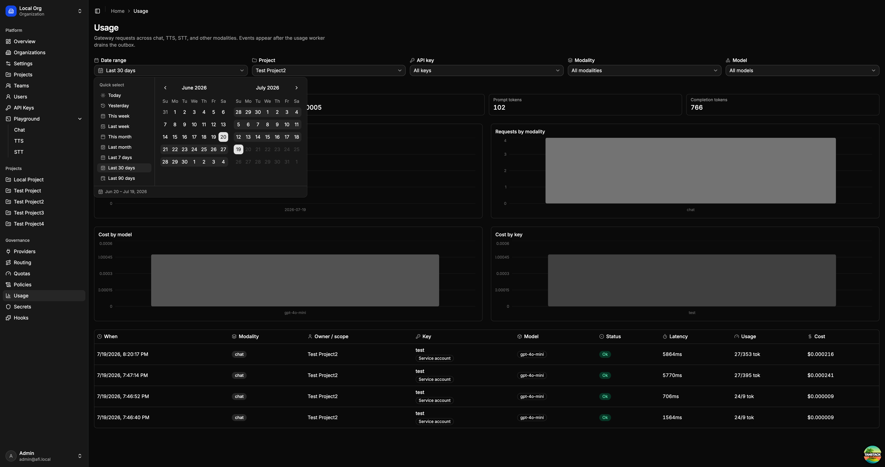
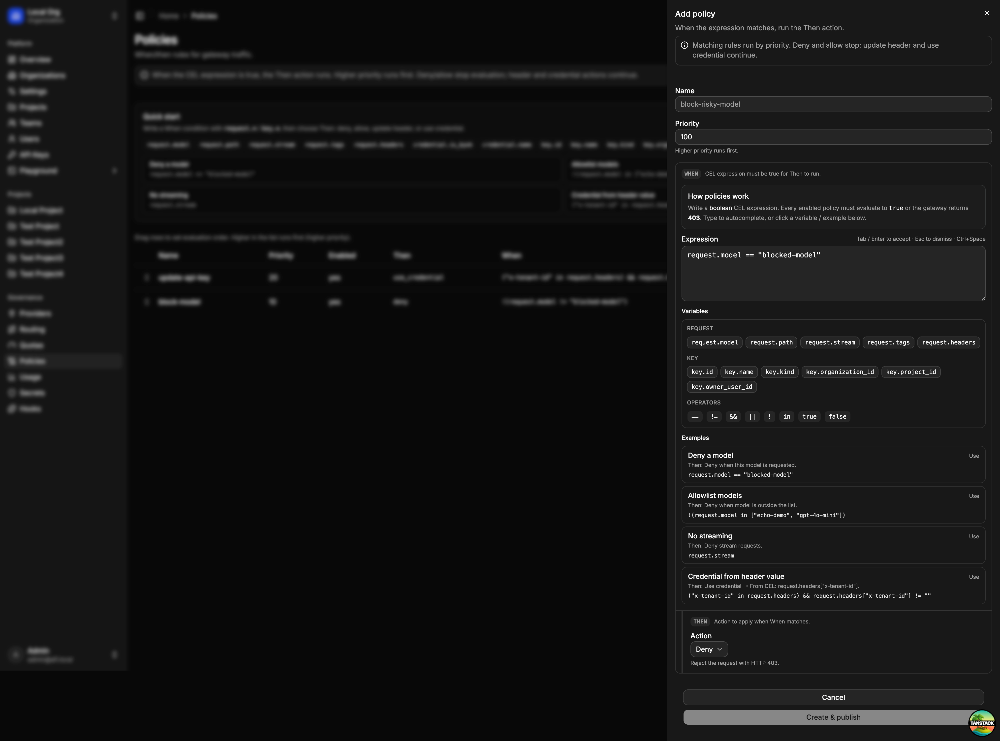

Web UI
The platform UI is the browser console for operating AFI: identity and access, gateway configuration, and a built-in playground. It talks to the control plane for admin APIs and can call the gateway for chat, TTS, and STT.

What you can do
- Organizations & access — switch orgs, manage projects, teams, users, and invites
- API keys — create personal or service-account keys for the gateway
- Providers & routing — register upstream providers and define model routes (including failover)
- Quotas & policies — set usage limits and CEL when/then rules that the gateway enforces
- Secrets & hooks — manage credentials and extension hooks used by the platform
- Usage — filter requests by project, key, modality, and model; inspect volume, tokens, cost, and per-request logs
- Playground — try chat, text-to-speech, and speech-to-text against your live gateway
Policies
Open Operations → Policies to create custom request policies. Org owners and admins can add, edit, reorder, enable/disable, and delete policies. Creating or updating a policy publishes a new gateway snapshot so the change takes effect on the next request.

Each policy is a when / then rule:
- Name & priority — higher priority runs first (default
100). Drag rows in the table to reorder. - When — a boolean CEL expression. The policy runs only when the expression is
true. - Then — the action to take when the expression matches.
How evaluation works
Matching rules run in priority order (highest first):
- Deny — stop and reject with HTTP 403 (
policy_violation) - Allow — stop and allow (skips lower-priority rules)
- Update header / Use credential — apply the change and continue to the next matching rule
Disabled policies are ignored. If no deny/allow rule stops evaluation, the request continues through the rest of the gateway pipeline.
Writing the When expression
Use the expression editor chips to insert variables and operators, or pick an example to start from.
| Group | Variables |
|---|---|
| Request | request.model, request.path, request.stream, request.tags, request.headers |
| Key | key.id, key.name, key.kind, key.organization_id, key.project_id, key.owner_user_id |
| Credential | credential.is_byok, credential.name |
Notes:
request.headerskeys are lowercased;authorizationandcookieare omitted.request.tagscomes from theX-AFI-Tagsheader (string → string map).- Common operators:
==,!=,&&,||,!,in.
Then actions
| Action | What it does |
|---|---|
| Deny | Reject the request with HTTP 403 |
| Allow | Short-circuit allow; skip lower-priority rules |
| Update header | Set an outbound header on the upstream provider request (static value or CEL value_expr) |
| Use credential | Select a named secret for this request (fixed name or CEL credential_name_expr) |
Credential resolve order when a policy selects one: policy use_credential → api_key → project → organization → provider api_key_env. Unknown credential names fail closed. Manage secrets under Secrets before referencing them from a policy.
Example policies
| Goal | When | Then |
|---|---|---|
| Block a model | request.model == "blocked-model" |
Deny |
| Allowlist models | !(request.model in ["echo-demo", "gpt-4o-mini"]) |
Deny |
| Ban streaming | request.stream |
Deny |
| Partner key from header | ("x-tenant-id" in request.headers) && request.headers["x-tenant-id"] != "" |
Use credential → From CEL: request.headers["x-tenant-id"] |
| Fixed partner key | header equals a known tenant | Use credential → credential name partner-acme |
| Tag upstream | any matching when | Update header X-Partner from a static value or CEL expression |
Click Create & publish (or save when editing) to persist and publish. API field details: Config reference — CEL policies.
Run locally
With the control plane (and optionally the gateway + worker) already running:
pnpm --dir web install
pnpm --dir web dev
Open http://localhost:3000 and sign in with the seed user (admin@afi.local / admin), or with a configured SSO provider. Full stack steps: Local development.